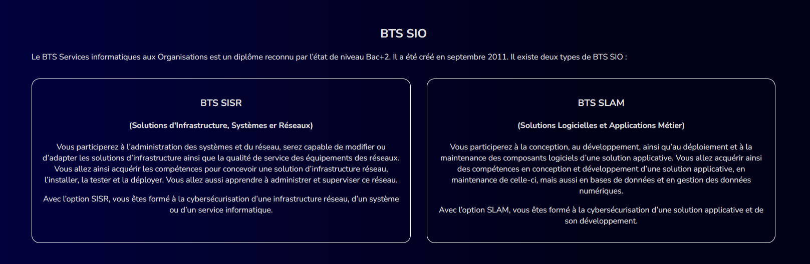
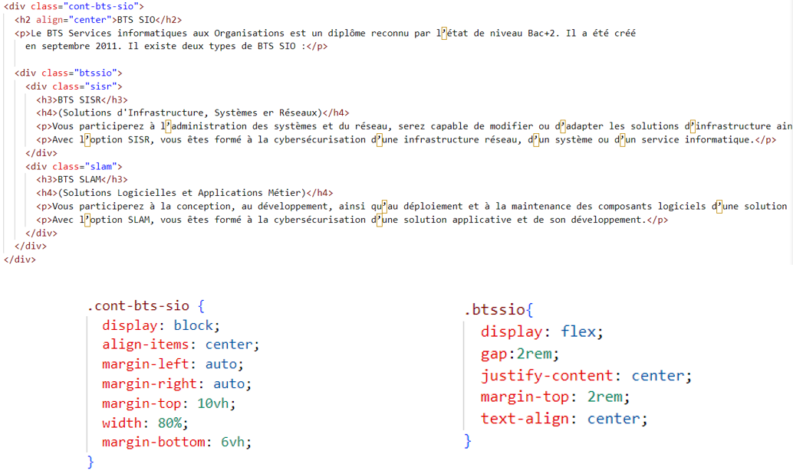

Fiche de Présentation du Portfolio
Objectif
Développer mon Portfolio
Description
Dans le cadre de mon BTS SIO, option SLAM, j'ai conçu un portfolio en utilisant du HTML, du JavaScript et du CSS. Ce portfolio sert de vitrine pour mon parcours, mes projets informatiques, ainsi que les compétences que j'ai acquises au fil de mes études. Il présente de manière structurée l'ensemble de mon travail et mes réalisations.
Fonctionnalités principales
- Présentation personnelle : Section dédiée à une brève présentation de moi-même, incluant mes objectifs professionnels et mes centres d'intérêt.
- Projets informatiques : Galerie de mes projets informatiques, avec des descriptions détaillées, des captures d'écran, et des liens vers les dépôts de code ou les démonstrations en ligne.
- Parcours académique : Description détaillée de mon parcours scolaire, en particulier de mon BTS SIO.
- Compétences : Liste de mes compétences techniques, comprenant les langages de programmation, les frameworks, les outils de développement, et les méthodologies que je maîtrise.
- Veille technologique : On y retrouve des veilles technologiques dans le domaine de l’informatique.
Technologies utilisées
- Langage de balisage : HTML pour la structure du contenu
- JavaScript pour des interactions et animations dynamiques
- Feuilles de style : CSS pour la présentation et le design
Objectifs pédagogiques
Ce projet m'a permis de renforcer mes compétences en développement web front-end, en particulier dans les domaines suivants :
- Création de sites web statiques et responsives.
- Utilisation avancée de CSS pour le design et la mise en page.
- Structuration sémantique du contenu avec HTML.
- Optimisation de l'accessibilité et de l'expérience utilisateur.
- Gestion de projet et organisation de contenu.
Déploiement
J’ai créé un repository sur GitHub afin de pouvoir héberger mon portfolio grâce à GitHub Pages.

